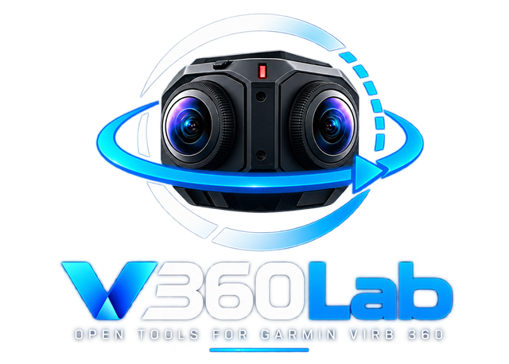
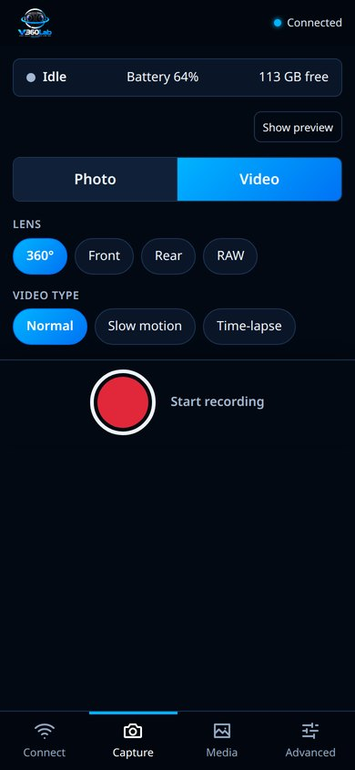
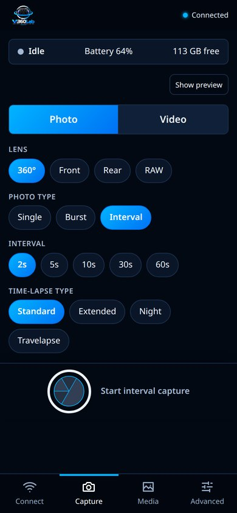
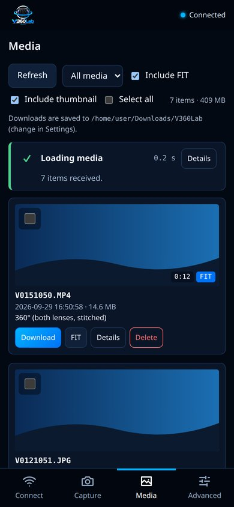
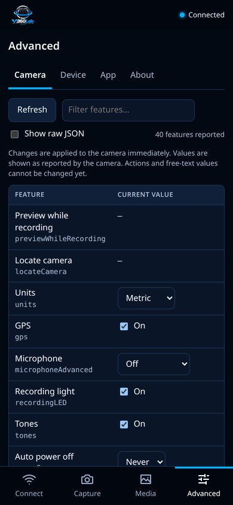

Find and connect
One button: tries the last camera, then the camera's own Wi-Fi, then scans your local network. The camera is usually found in 2–3 seconds, with each step shown as it happens.

Control your Garmin VIRB 360 from your phone or computer, download media and FIT telemetry, and prepare 360° data for geospatial and computer-vision work. Local only, no cloud.
Latest release from GitHub.
All builds are produced by GitHub Actions from the public source code. Windows builds are not code-signed yet, so SmartScreen may warn on first launch. On Android, allow installation from your browser or file manager.
One button: tries the last camera, then the camera's own Wi-Fi, then scans your local network. The camera is usually found in 2–3 seconds, with each step shown as it happens.
See what the camera sees and look around the 360° view with your finger, switch between video and photo, choose 360°, front, rear or RAW lens mode, single, burst or interval photos, and start or stop with one big shutter button.
Browse the card with thumbnails, play videos and open photos (also in 360°), see the GPS track, speed and altitude from the FIT telemetry in sync with the video, export it as GPX or GeoJSON, extract georeferenced 360° frames, download media with their telemetry and metadata, and delete files with verification.
Every setting the camera reports (white balance, ISO, exposure, microphone, GPS…) can be changed, with readable names in English and Italian. Save Wi-Fi networks on the camera, or make it beep to find it.
V360Lab talks only to the camera on your network over its HTTP API. No Garmin account, no cloud service, no data leaves your devices.
Built with Rust, Tauri, React and TypeScript, licensed under the GNU AGPL-3.0, and tested against a real VIRB 360 (firmware 4.20).



